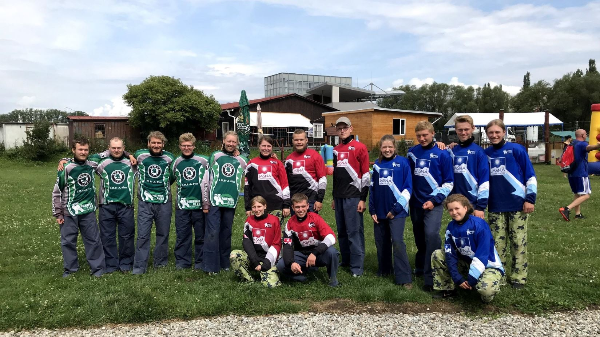

For klanspejderne på 16-24 år er fællesskabet og samværet med ens spejderkammerater i centrum. Her har spejderne selv ansvar for arbejdet i patruljen, de vælger selv deres leder, og de bestemmer selv deres aktiviteter. De tager ofte på ture til internationale lejre. Det er det udfordrende og uafhængige spejderliv, som bliver afprøvet. Spejderne selv har ansvaret for at udvikle og gennemføre projekter. Det giver dem viden og udvikler deres evner. For de ældste spejdere kan et projekt godt vare længe, være stort eller ske i samarbejde med spejdere fra andre grupper.

